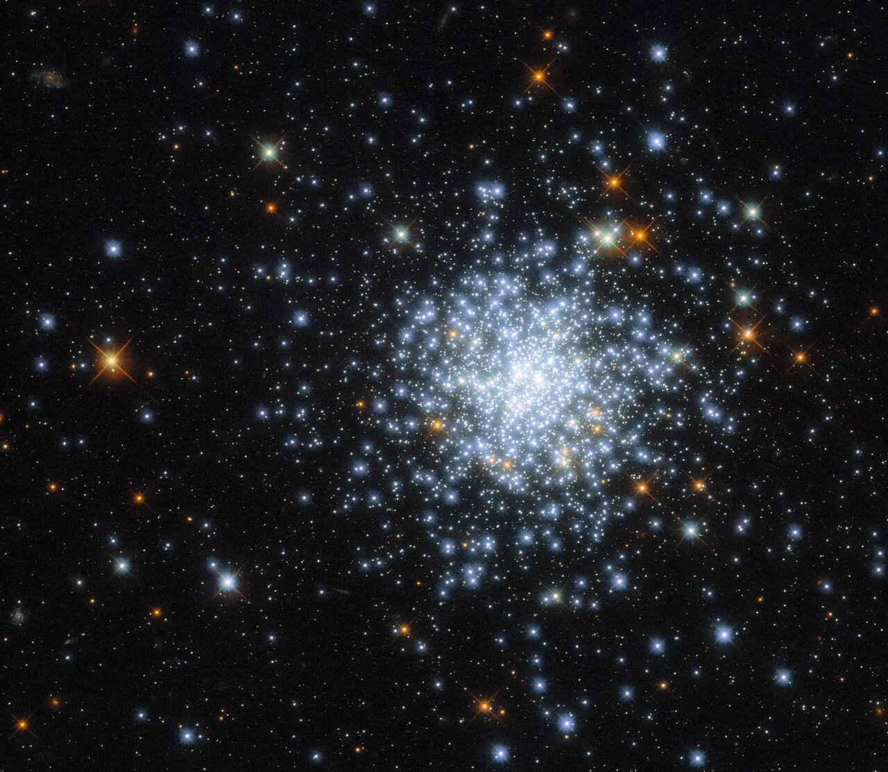

AI is transforming the way we conduct scientific research — and astronomy is no exception. The immense volumes of data produced by observational campaigns offer unprecedented opportunities to apply new AI techniques to make discoveries. AI agents are also revolutionizing how we communicate the steady stream of scientific discoveries to the broader public, helping ensure that science remains a widely supported and valued endeavor.

The image above is the open cluster (OC) NGC 2164, taken by the Hubble Space Telescope. OCs are large groups of gravitationally bound stars that form from the same molecular cloud. These clusters can contain anywhere from hundreds to hundreds of thousands of stars. Identifying which stars belong to a given OC can be challenging, as it requires distinguishing true cluster members from background and foreground field stars. Using unsupervised machine learning techniques (HDBSCAN), we have identified cluster members in 35 OCs. Additonally, we have applied Bayesian methods to distinguish single stars from binary stars, helping to shed light on how binary systems evolve in these environments. Read more about our study here and explore our identified cluster members at our Open Cluster Binary Explorer website.ZENITH is an AI agent currently operating on X and powered by OpenAI models. ZENITH is a science communicator designed to share the latest astronomy research with non-specialists in a clear and accessible way. The agent autonomously identifies new research papers, generates relevant images, and tweets concise summaries. My goal is to make astronomy more accessible to the public, helping people stay informed and engaged with the latest advances in astronomy. I am continually improving ZENITH and welcome suggestions for how to make it more valuable to the community.